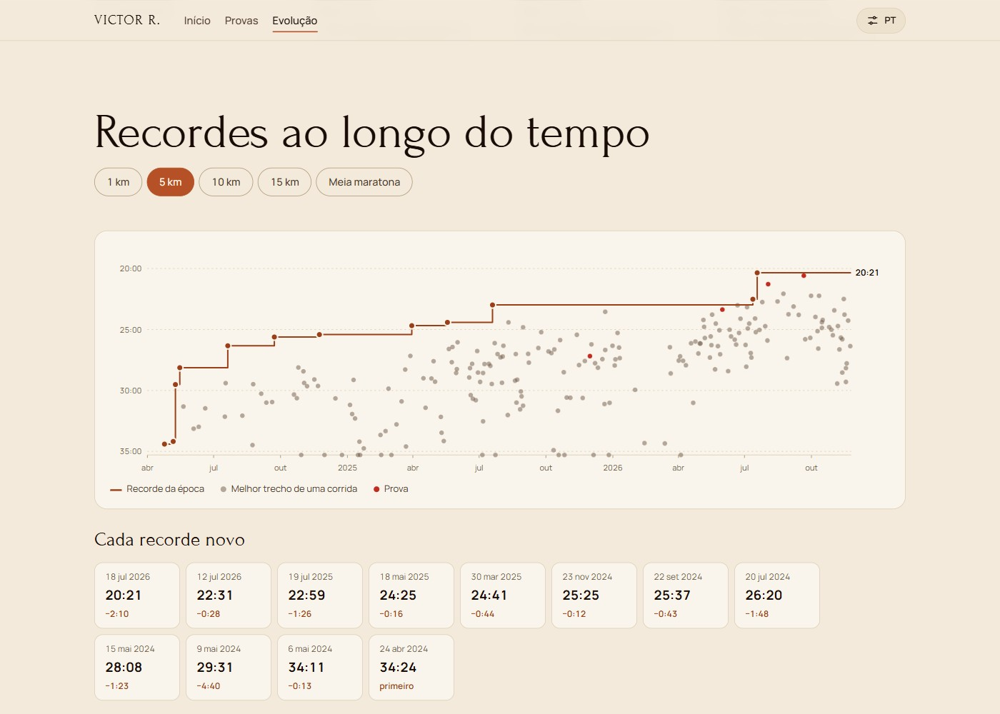
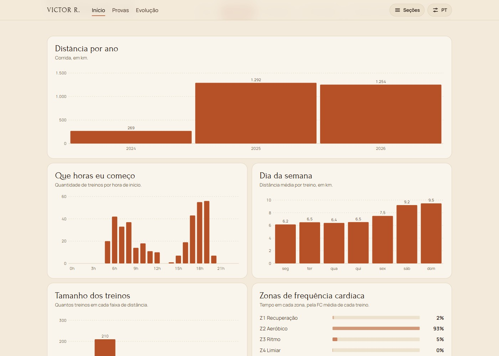
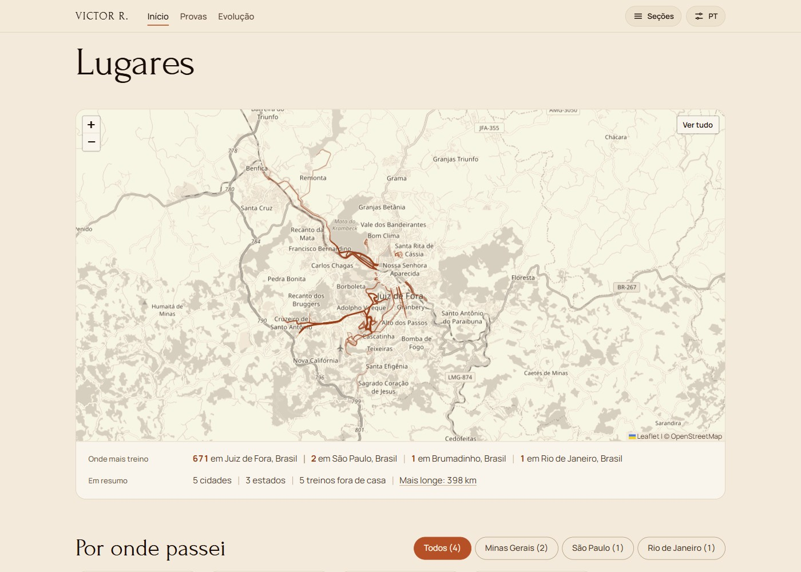

Project 04 — Case study
The Oceanthief Run
My running website, fed by my own Strava data. Every workout I log shows up on the site about a minute later without me touching anything — and with no server, no database and no build step.
Live · updates after every workout
Activities synced Since Apr 2024 · every sport
Total distance Running, walking and the rest
Latest workout logged From the watch, via Strava
Data refresh Nobody runs anything
Figures as of 24 Nov 2026.
01 — The idea
A personal site that is also a data product
Strava stores everything but shows little of what matters when you are training for a race: how your records have moved, which races you ran and how fast, whether your volume is where it should be months before the marathon. I wanted a place of my own for that, in the spirit of runners' personal sites — therealroach.co was the reference.
The constraint that shaped the project: it had to run itself. A training site that depends on me remembering to run a script is an outdated site within two weeks. So the real work was not the page — it was the plumbing that carries the data from the watch to the page, at no cost and with no server to look after.
02 — The product
From career totals to kilometre splits
Home, Races, Progress, a page for every workout and the marathon plan — in Portuguese, English and Spanish, with light and dark themes and km or miles.





What Strava does not compute, the site does. A finish-time prediction using Riegel's formula, from the best marks of the last 12 months, set against the marathon goal — with a note on the page that for the marathon it tends to be optimistic. Pace against heart rate in two periods, to see whether the same effort got faster. And the race archive, which groups the editions of the same race: Strava has no race identifier, so the grouping combines a similar name, the same time of year and a similar distance.
03 — Automation
From watch to website in about a minute
01
Strava
workout created,
edited or deleted
02
Cloudflare Worker
checks the event
replies in < 2 s
03
GitHub Actions
Python sync
incremental
04
Repository
JSON versioned
in git
05
GitHub Pages
static site
no server
Two triggers: the event and the clock
When an activity is created, edited or deleted, Strava sends an event (webhook) to a Cloudflare Worker of about 60 lines. The Worker checks the event belongs to the right athlete, replies immediately — Strava gives up if the reply takes more than 2 seconds — and only then asks GitHub to run the update. On the runs triggered by a workout, the whole path — download, generate, commit and publish — took 39 to 75 seconds.
Events can get lost. So the same automation also runs at three fixed times a day as a safety net. Because the sync is incremental, running it twice does no harm: the second run simply finds nothing new. And a queue guarantees two runs never write at the same time.
on:
repository_dispatch: # the Strava event, via the Cloudflare Worker
types: [strava]
schedule: # safety net: 6am, 1pm and 9pm (Brasília)
- cron: "0 0,9,16 * * *"
push: # a code change publishes right away
branches: [main]
concurrency:
group: atualizar-site # one run at a time, none cancelled
cancel-in-progress: falseThe data lives in git
There is no database. The Python script generates JSON files — a summary of every activity, the routes, the monthly series and one file per workout — and commits them to the repository. The site only reads those files. The upshot: every update is in the history, you can see exactly what changed on each run, and the whole site is static, hosted for free with nothing to administer.
Browser caching without a build step
GitHub Pages tells browsers to keep CSS and JavaScript for 10 minutes, so a
published fix could take that long to reach returning visitors. With no bundler
to handle it, the automation itself, while assembling the published folder,
appends a code hash to each file (site.css?v=…). New code, new tag,
and the browser fetches the new version. The code in the repository stays
untagged.
04 — Data engineering
A pipeline that respects its source's limits
1. Incremental sync under a rate limit
The Strava API allows 100 requests every 15 minutes. The activity list is cheap, but each workout's detail (splits, best efforts, gear) and its streams along the route (elevation, pace, heart rate) cost one request each. The first load took hours, with the script waiting on its own between batches. Since then, every run has a budget — up to 90 details and 90 streams, newest workouts first — and everything already downloaded stays cached, including each workout's weather (Open-Meteo) and city (Nominatim). Each stream is requested exactly once.
2. Python standard library only
The sync script is about 850 lines with no dependencies: HTTP, OAuth, JSON and
the geometry all come from the standard library. In practice the automation has
no pip install to break and no package version to go stale.
3. Numbers that add up
A detail that only shows up with real use: the weekly summary showed "2 km" for a 1.55 km walk. Rounding looks harmless until someone compares it with Strava itself. It became a written rule: a single workout always shows two decimals, as Strava does; totals use fewer decimals as the number grows. In the same change, splits started using whichever time (moving or elapsed) sums to the workout's time, and walking cadence started counting both legs.
05 — Privacy
Publishing the map without publishing the address
A public site with someone's routes is, without care, a map to their front door.
The first version did what many people do: trim 400 metres from the start and end of every route. Before calling that solved, I audited the result against the published data.
Fixed 400 m trim
~54%
of published route endpoints fell inside the same square of about 400 m. The trim hid the exact point, but together they drew a target.
Automatic privacy zone
1 km
radius around the place most workouts start from, found by the script itself. Nothing inside it is published, and the zone's centre is shifted from the real spot in a secret direction: the hole in the map does not point at the address.
Least privilege
The site asks Strava only for activity:read, never
read_all. Workouts set to "Only you" never reach the
pipeline — there is nothing to leak.
Endpoints that vary per workout
On top of the zone, the start and end of each route are trimmed by 400 to 600 m, a different amount for every workout. A constant trim lines the endpoints up in a ring around the origin; varying it makes the ring disappear.
The full data never leaves my computer
Untrimmed routes live in a folder git ignores. The Strava keys and the GitHub token are stored as Actions and Worker secrets — the token scoped to a single repository and allowed only to write contents.
Precision only where it serves
The overview map and the city list use rounded coordinates. What is enough to say "I trained in Juiz de Fora" does not need to say which street.
06 — Interface
Hand-built, in three languages
- Plain HTML, CSS and JavaScript, as ES modules, with no npm and no build. Bar, line and step charts are custom SVG; maps use Leaflet with OpenStreetMap; the opening globes use d3-geo.
-
Three languages with a checker. Every interface string goes
through a translation function keyed by the Portuguese phrase. A script flags
any phrase missing its English or Spanish version, or a placeholder such as
{n}dropped from one of them. - Colours validated, not picked by eye. The sport and training phase colours went through a validator for contrast and mutual distinctness, in both themes.
- Type tested with real content. The first font drew the Portuguese ordinal "ª" as a plain "a" — and races like the "14ª Corrida Camilo dos Santos" are exactly what the site is about. I switched fonts.
- Layout measured, and looked at. Driving Chrome through the DevTools protocol, layout changes are measured from 360 to 1920 px: horizontal scroll, broken words, line height. Then checked in screenshots, because measuring text will not show a caption breaking one letter per line.
07 — In production
The first week live
Measured from the GitHub Actions history, 16–24 Nov 2026.
| Item | Result |
|---|---|
| Automation runs | 52 |
| Triggered by a workout (Strava event) | 18 |
| Duration of a workout-triggered run | 39–75 s |
| Runs completed | 48 / 52 |
| Activities with full detail | 810 / 937 |
The four failures each taught something. Three were GitHub Pages rejecting the deployment right after receiving the site package — an intermittent problem on GitHub's side. The automation now waits 20 seconds and tries again. The fourth was a race between the bot and me: I pushed code in the same minute it was trying to save new data, and its push was rejected. Nothing was lost — the next run caught up — but it is the next thing to harden.
08 — Limitations
What the data cannot support
Heart rate and cadence only since May 2026
That is when I started running with a sensor watch. There is nothing to show before it, so effort comparisons only hold from that date — two years of running are left out of them.
79 older runs have no detail
They were entered by hand in Strava, with no GPS or splits. They count towards totals but not towards segment records.
Sometimes Strava disagrees with itself
On 27 walks with stops, neither moving time nor elapsed time matches the sum of the splits. The right figure can only come from the full route streams, which have not been downloaded for every workout yet.
Riegel is a reference, not a promise
The marathon prediction extrapolates from shorter distances and tends to be optimistic. The page shows the calculation, the source of each time used and that warning, side by side.
09 — Stack
Tools
Data
- Python
- Strava API (OAuth 2)
- Open-Meteo
- Nominatim
- Versioned JSON
Automation
- GitHub Actions
- Cloudflare Workers
- Webhooks
- GitHub Pages
Interface
- JavaScript
- CSS
- SVG
- Leaflet
- d3-geo
Quality
- Privacy audit
- Translation checker
- Layout tests via CDP